Analiza 2
jun '93, smer R
1. Naci zapreminu tela cija je granica zadata relacijama: u = 0, u = 1, u² = x² + y² + z².
2. Neka je g(x) = (p - |x|)².
Dati su Furijeovi koeficijenti ove funkcije 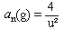.
Neka je
ƒ(x) = (p - |x|)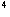2p²
(p - |x|)².
a) Razviti ƒ u red i ispitati konvergenciju.
b) Koristeci funkcije ƒ i g izracunati  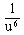.
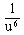.
3. Neka je funkcija ƒ : 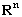® R zadovoljava sledeci uslov: ƒ(tx) = t²ƒ(x). Dokazati da:
a) ƒ je neprekidna na celom i ƒ je diferencijabilna u 0.
b) Postoji ƒ koja je diferencijabilna samo u 0 i u svim ostalim tackama je prekidna (n = 2).
4. Neka je povrs E zadata sa E = { (x,y,z) | x² + y²
+ (z / a)² = 1} orijentisana spoljnom normalom. Neka je P
familija povrsi sa nasledjenom orjentacijom od E, definisana na sledeci
nacin:
Pr
= { (x,y,z) | 0 < r < x < 1, 0 < r < x² + y²
< 1, z > 0, x² + y² + (z / a)² = 1}
Izracunati zavisno od parametra r: 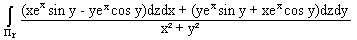.
V = {(x,y,z) Î R³ : x² + y² + z² £ 1; x² + y² £ z²; z ³ 0}
b) Izracunati integral  x²
dydz + y²dzdx + z² dxdy gde je G spoljna
strana dela povrsi hiperboloida
x²
dydz + y²dzdx + z² dxdy gde je G spoljna
strana dela povrsi hiperboloida
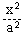+ 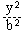
- 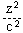= 1, 0 £
z £ c.
3. Izracunati  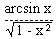dx
i dokazati da je
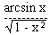dx
i dokazati da je  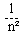=
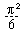 razvijanjem dela
podintegralne funkcije u stepeni red.
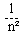=
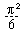 razvijanjem dela
podintegralne funkcije u stepeni red.
4. Izracunati I(a) =  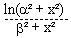dx
za b ¹ 0.
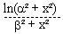dx
za b ¹ 0.